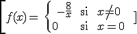

Hay diferentes tipos de discontinuidades:
–Discontinuidad evitable: si existe el límite y no es f(a).
Ejemplo 1:
f tiene una discontinuidad evitable en x = 1
–Discontinuidad inevitable: cuando existen los límites laterales y no son iguales. El salto puede ser finito o infinito.
Example 2:
f tiene una discontinuidad inevitable en x = 1, con salto 1.
Ejemplo 3:

\[f(x)=\left\{ \begin{align} & -\frac{8}{x}\text{ si }x\ne 0 \\ & 0\text{ si }x=0 \\ \end{align} \right.\text{ }\]
f tiene una discontinuidad inevitable con salto infinito en x = 0
–Discontinuidad de 2ª especie: cuando no existe uno de los límites laterales.
Ejemplo 4:
no existe
Ejercicios:
1.- Estudia la continuidad de las siguientes funciones y clasifica sus discontinuidades si las hay:
a)f(x)=\left\{ \begin{align} & {{e}^{x}}\text{ si }x<-1 \\ & \frac{4}{x+3}\text{ si }-1\le x\le 1 \\ & 1+\ln x\text{ si }x>1 \\ \end{align} \right.
b)g(x)=\left\{ \begin{align} & 1-{{x}^{2}}\text{ si }x<1 \\ & 3{{x}^{2}}-12x+9\text{ si }1\le x\le 3 \\ & -2{{x}^{2}}+16x-30\text{ si }x>3 \\ \end{align} \right.
2.- Estudia la continuidad dependiendo del parámetro a:
f(x)=\left\{ \begin{align} & {{x}^{2}}+ax+a-1\text{ si }x\le 2 \\ & \ln (x-1)\text{ si }x>2 \\ \end{align} \right.\text{ }
Soluciones:
1.- a) f es continua en R-{-1}, en x = -1 f tiene una discontinuidad con salto (e - 2); b) g es continua en R
2.- si a = -1, f es continua en R
- si a ≠ -1, f es continua en R-{2}, en x = 2 f tiene una discontinuidad con salto (3 + 3a)